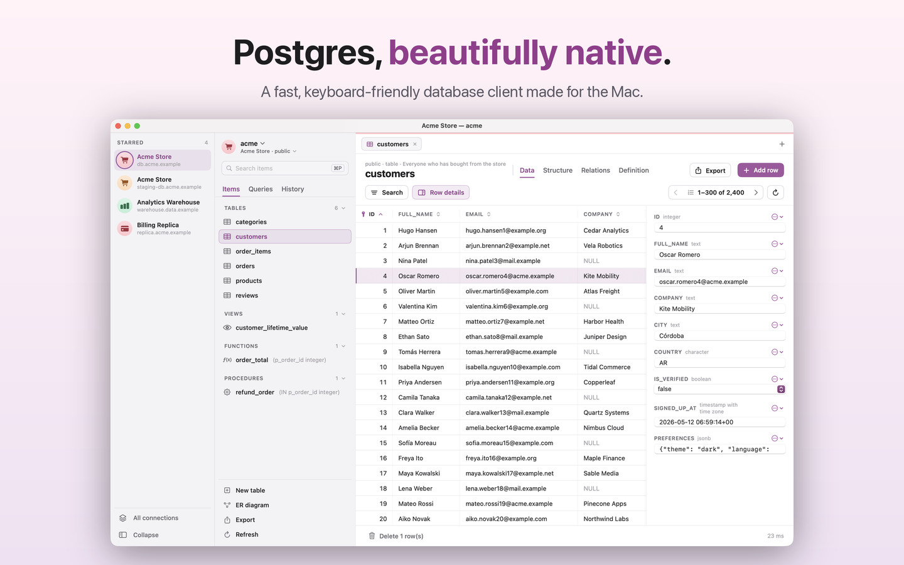

DBJoy
A fast, native PostgreSQL client for the Mac
Browse schemas, edit data without fear, write SQL and export, all in a clean, keyboard-friendly app. Edits are staged and color-coded, commit in one transaction, and on production DBJoy shows you the SQL before anything runs.

Highlights
- Safe editing: staged changes, one-transaction commits, SQL review on production
- SQL editor with alias-aware completion, multiple result sets and per-tab transactions
- ⌘F search by column and operator, ⌘P to open anything, and ER diagrams
- Structure editing through reviewed ALTER statements
- SSH tunnels, SSL, read-only connections and Keychain passwords
- CSV, JSON and SQL export, plus full pg_dump backups
- No account, no tracking. Light and dark themes